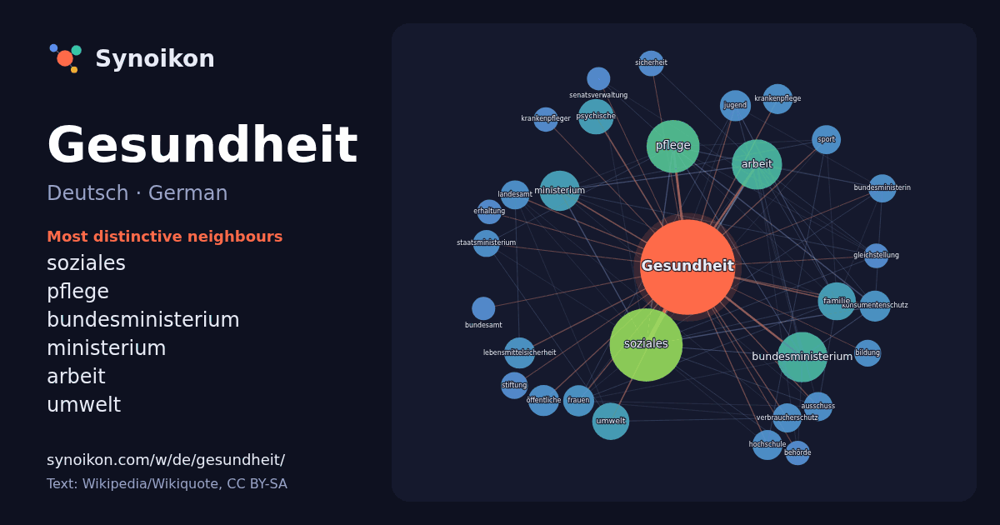

Deutsch · German · popular word
Gesundheit
“health” · The words found around it in 838 instances from German Wikipedia, Wikiquote.

Most distinctive neighbours
- soziales 84×
- pflege 45×
- bundesministerium 41×
- ministerium 25×
- arbeit 24×
- umwelt 22×
- psychische 22×
- konsumentenschutz 17×
- lebensmittelsicherheit 17×
- krankenpflege 16×
- verbraucherschutz 15×
- landesamt 14×
- bundesministerin 14×
- öffentliche 14×
- jugend 13×
- ausschuss 13×
- staatsministerium 13×
- sport 13×
- hochschule 12×
- krankenpfleger 11×
× = how many times more often than in general German Wikipedia text.
Most frequent neighbours
- soziales 89
- pflege 47
- arbeit 42
- bundesministerium 42
- ministerium 27
- familie 24
- umwelt 23
- psychische 21
- landes 18
- deutsche 16
- frauen 16
- jugend 16
- konsumentenschutz 16
- leben 16
- lebensmittelsicherheit 16
- öffentliche 16
- hochschule 15
- krankenpflege 15
- ausschuss 14
- landesamt 14
In context
- Gesundheit ist ein körperlicher und geistiger Zustand eines Menschen oder der Zustand einer Gruppe (bspw. Familiengesundheit, Bevölkerungsgesundheit). Wikipedia snippets · Gesundheit
- Psychische Gesundheit (auch seelische, geistige, oder mentale Gesundheit; englisch Mental Health) ist ein Zustand des Wohlbefindens, in dem eine Person Wikipedia snippets · Psychische Gesundheit
- Gesundheit (BMG) ist eine oberste Bundesbehörde der Bundesrepublik Deutschland. Gesetzentwürfe dieses Ministeriums werden im Ausschuss für Gesundheit Wikipedia snippets · Bundesministerium für Gesundheit (Deutschland)
- Die Bundesinnungskrankenkasse Gesundheit (Eigenschreibweise BundesInnungskrankenkasse Gesundheit, kurz BIG direkt gesund) ist eine deutsche Innungskrankenkasse Wikipedia snippets · Bundesinnungskrankenkasse Gesundheit
- Bundesministerium für Gesundheit steht für: Bundesministerium für Gesundheit (Deutschland), deutsche Bundesbehörde Bundesministerium für Soziales, Gesundheit, Pflege Wikipedia snippets · Bundesministerium für Gesundheit
- Spa wird analog zur Wortbedeutung im Englischen als Oberbegriff für Gesundheits- und Wellness-Einrichtungen verwendet. Er bezeichnet unterschiedliche Wikipedia snippets · Spa (Gesundheit)
- Gesundheit ist eine Bezeichnung für Gesundheit, körperlicher und psychischer Zustand Gesundheit (Zeitschrift), Zeitschrift 1875–1918 Gesundheit!, Fernsehsendung Wikipedia snippets · Gesundheit (Begriffsklärung)
- Die Finanzkommission Gesundheit (Eigenschreibweise: FinanzKommission Gesundheit oder kurz FKG) wurde im September 2025 von der deutschen Bundesgesundheitsministerin Wikipedia snippets · Finanzkommission Gesundheit
More German words
Precomputed on 2026-10-09 with default settings (±5 words, medium corpus). The interactive map can refresh it with live data.